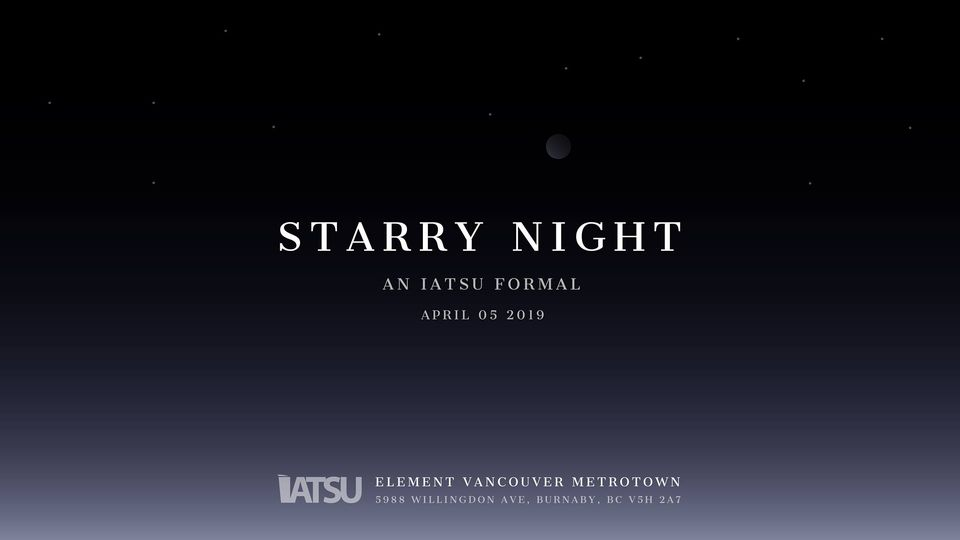
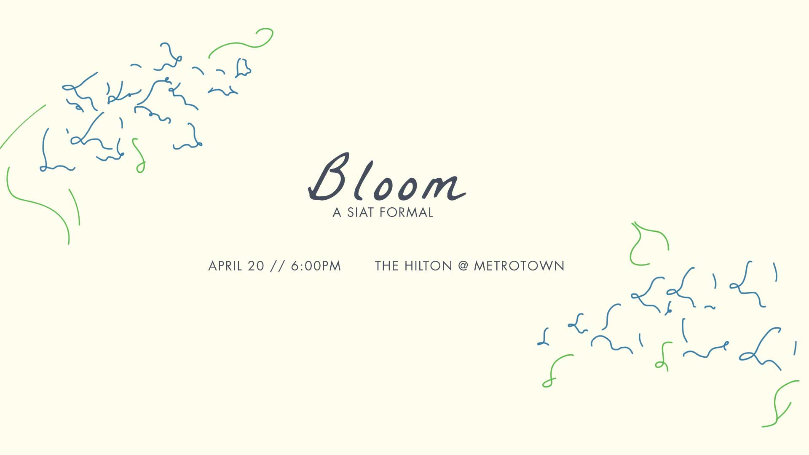
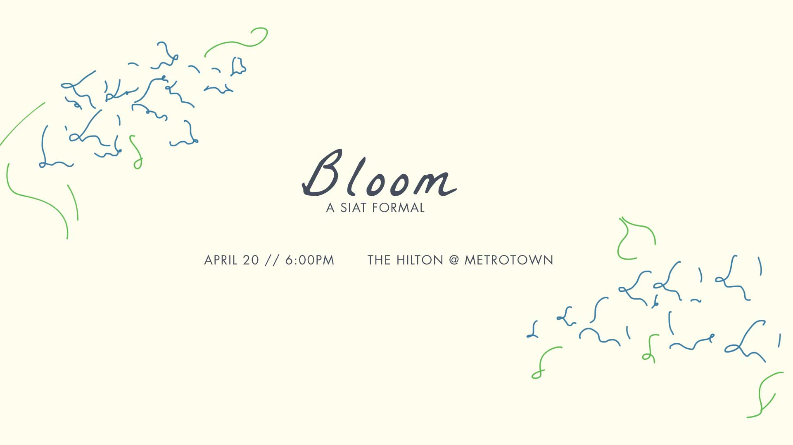
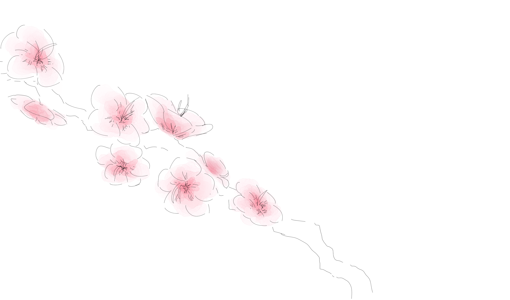

IATSU 2020 SPRING FORMAL EVENT BANNER
project synopsis
Working with our two Director of Events and the IATSU President, I designed the art direction and the event banner for our Spring Formal event.
timeframe: three months

This banner was originally designed for our annual Spring Formal event. This event was supposed to be a mark for the end of the school year after the Spring semester. Unfortunately due to COVID-19, we had to cancel this event. This is what I had designed for the theme and the event banner prior to cancellation.
tools used
- CLIP STUDIO PAINT PRO
- Adobe Illustrator
theme
Every year, our formal event has a theme centered around it; for example, the theme for the 2019 Spring Formal was Starry Night, and Luminescence for the year before that. Because for the last two years the theme had something to do with stars, our event team decided to go with a more floral theme instead: Bloom.
initial designs
Instead of sketches, I made quick designs to get a feel for what I wanted to go for. Taking inspiration from the event banner used for the Starry Night Formal, I wanted to use a more elegant, serif font, but I also wanted to experiment with a script font as well, while keeping an elegant form at the same time.
 

The colours used for the event banner were supposed to determine the colour theme of the actual event, and so while pink was a popular colour choice among our team, I also wanted to play around with royal blue as I find it to be a very beautiful colour. In the end, we decided to move forward with pink as the main colour theme with cherry blossoms to signify the Spring season.
For the flower motif, I wanted to use something handdrawn as a divergence from previous years- to stand out among others. While initially I wanted to use simple lineart similar to a one-line artstyle. However, after further experimenting, I decided to adopt realism with a touch of traditional watercolour as I find there is a gentle charm in using traditional mediums that translates the beauty of nature well.

final design + thoughts
With feedback from my peers, I adjusted the font layout for easy readability and I had laid the cherry blossom illustration so it frames the text.
Unfortunately, while we were still promoting our event, we had to cancel the formal because of the sudden pandemic outbreak and we were unable to see our event come to life. Prior to our cancellation, we did have 118 responses to our Facebook event page: 18 people responded that they were planning on attending, while 95 were interested in the event.
Personally, I was distraught about the cancellation. After designed the event banner, I was supposed to work with the rest of the team to figure out decorations, and ticket designs. This event was supposed to be the last event for our IATSU term, and it was disheartening that we had to end on such a note. If I could have it any other way, I hope that I would have been able to continue working on this event until its completion and see the outcome of our hardwork.